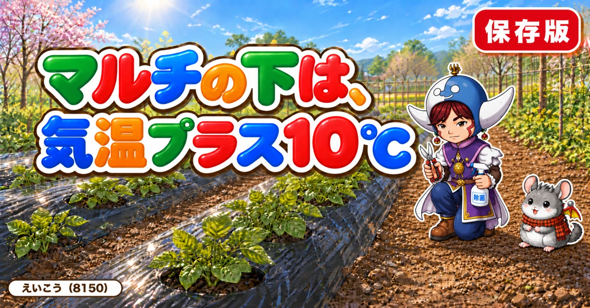
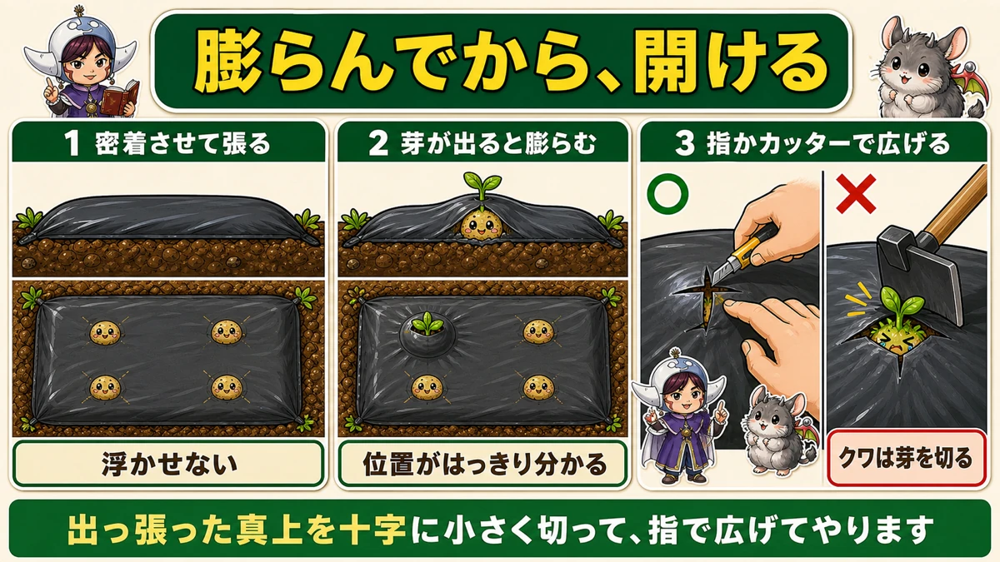
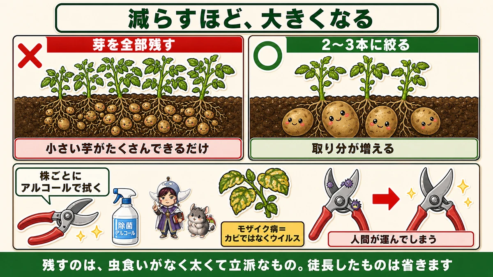
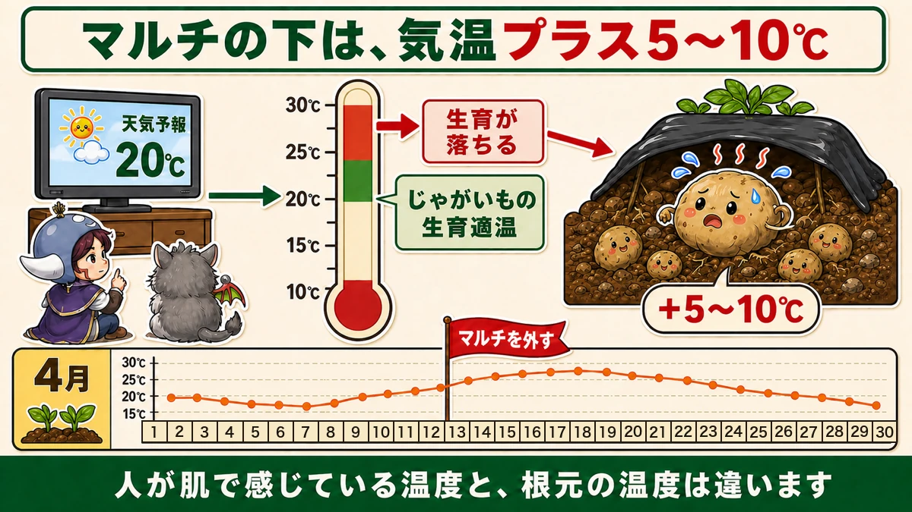
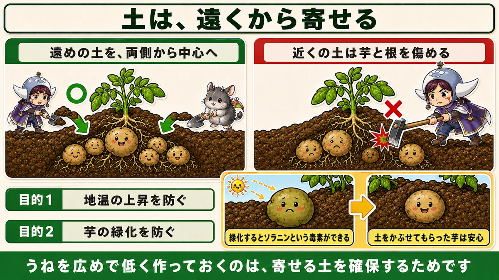

じゃがいもの芽かき・土寄せガイド｜本数と時期、マルチ管理の判断

どうも、8150（えいこう）です🌱 家庭菜園歴8年、理科の教員免許を持っていて、有機・無農薬で野菜を育てています。
📖 この記事の目次
この記事で分かること
- 大きめの芋を育てたい場合は、太く勢いのある芽を2〜3本残す方法が出発点です。小芋の数を優先するなら、残す本数の考え方が変わります。
- 芽かきでは、残す株を支えることが先。手で抜く方法とハサミで切る方法を、植えた深さや作業のしやすさで選びます。
- 土寄せは芽かき後と生育が進んだ時期に行い、その後も芋が見えれば追加します。『予定の回数を終えた』と『芋が隠れている』は別の確認です。
- 追肥する方法と、元肥や畑の残りの養分で育てる方法があります。生育が遅いという理由だけで、すぐ肥料を足しません。
- 黒マルチは寒い時期の保温に役立ちますが、暑さが続く時期には管理を切り替えます。撤去日を全国共通のカレンダーで決めないことが大切です。
- 緑化は栽培中だけの問題ではありません。収穫したあとも光を避け、芽や緑色の部分、未熟な芋の扱いに注意します。
芽が何本も出てきたら、まずはうれしいですよね。そのあとに「えっ、これを減らすん？」となるのが芽かきです。せっかく伸びた芽を取るのは、ちょっとためらいます。でも、ここで決めたいのは『全部残せるか』より、『どんな大きさの芋を収穫したいか』です。
このページは、発芽したじゃがいもを収穫までつなぐ管理の手引きです。種芋の切り方や芽出しを中心にした記事ではありません。すでに芽が出た株を前にして、今日どこを見て、何をすればよいかが分かるように整理しました。
みなさんの株がまだ小さいなら『作業の手順』から。芽かきを済ませたあとに困っているなら『失敗の見分け方』から読んでください。説明によって数字が違って迷ったときは『説明が分かれていること』へ戻れば大丈夫です☺️
持ち帰ってほしいのは、芽の本数だけで管理を終えないこと。『芽の勢い』『株元の土』『虫や葉の変化』『マルチの下の暑さ』をセットで見ると、次の作業を選びやすくなります。
早見：じゃがいもの育て方（ひと目で分かる数字）
春作の計画と、発芽後に見る数字
- 植え付けの時期：材料の春作の例は2月下旬〜3月中旬。早植えの例もありますが、保温と遅霜対策が組み合わされています。寒い地域へ、その日付だけを持って行かないでください。
- 地域差：寒さが残る地域では遅霜の見込みを先に確認します。暖かい地域の早植え、寒い地域の植え付け、秋作は別の計画です。地元の栽培暦と、購入した種芋の適期を優先します。
- 株間：30cmを基本にした説明と、肥料を抑えつつ根の広がる余地を作るため40cm程度にする説明があります。30〜40cmという幅は、目的が異なる栽培例の幅です。
- うね幅：今回の材料では、すべての方式に共通する幅は決められません。土寄せを前提に、株の両側に土を取れる場所と作業通路を残します。植えたあとに土をどこから持ってくるかまで考えます。
- うねの高さ：初めは低く広く整えて、あとから土を足す方法があります。ただし、水がたまりやすい土地でも低く作ればよい、という意味ではありません。排水の都合を先に見ます。
- 芽かきの時期：草丈10cm前後で選ぶ説明が中心です。5cmほどから進める説明もあります。早い説明と遅い説明を平均せず、芽の見分けやすさと株の安定を確認します。
- 残す芽：大きめの芋を狙う場合は2〜3本。2本は大きさ寄り、3本は数も取りたい場合の目安です。小芋を多く狙う方法や、条件をそろえて芽かきを省く実践もあります。
- 最初の土寄せ：芽かきを済ませたあと。株元を支える程度から始め、初期から大量の土で埋め込まない説明があります。
- 次の土寄せ：草丈20〜30cmの説明と、30〜40cmの説明があります。どちらでも、芋の露出や土の流出があれば予定を待たずに補います。
- 土寄せの回数：2回を区切りにする説明と、発芽直後の除草を兼ねた土の移動も含めて3回とする説明があります。2〜3回は数え方の幅で、追加不要の保証ではありません。
- 元肥：植え付け前の土づくりで考えます。すでに入れた量と、前作から残る養分の記録が、途中で追肥するかどうかの判断材料になります。
- 追肥の回数：0回と、栽培中2回の説明があります。追肥する方法では芽かきのころと、つぼみが見えるころが区切り。開花後に何度も足す計画とは区別します。
- マルチを外す時期：4月中旬、開花のころ・5月中旬、高温が続くころという説明が分かれています。地域、植えた日、気象条件が異なるため、『何月何日』より『保温がまだ必要か』で見直します。
- 温度の説明：生育適温として15〜20℃と20〜25℃が挙がっています。気温、地温、発芽のための温度を混ぜず、暑さが続くかどうかを見るための目安として使います。
- 収穫までの日数：材料の春作の流れは植え付けから初夏の収穫へつながりますが、一律の日数は確定できません。種芋の表示や地域の栽培暦を確認し、地上部の成熟と土の乾きも見ます。
- 連作の間隔：材料には、何年あければよいという共通の年数はありません。じゃがいもや同じナス科を続けた履歴、病気の発生を記録して、次の場所選びに使います。
数字を使う前に、方式をそろえる
早見の数字は、全部を一つの株へ足し合わせるためのものではありません。普通に土へ植えた株と、土をわずかにかぶせる浅植えの株では、芽を引いたときの安定が違います。黒マルチを使う株と使わない株では、土寄せの進めやすさも違います。
例えば、普通の深さで植えた説明の『手で抜く』を、極端な浅植えにそのまま当てはめると、種芋まで動かしてしまうことがあります。逆に、浅植えで簡単だった収穫の話だけを取り入れて、光を遮る管理を省けば、芋が見えてしまいます。楽になる作業と、必要になる作業を一緒に見るのがコツです。
記録は、長い栽培日誌にしなくてもOKです。まず次の項目が分かれば、あとで説明を比べやすくなります。
- 春作か秋作か、植えた日と品種を記録した
- 植えた深さと、マルチの有無を確認した
- 元肥を入れたか、前作で肥料を使ったかを調べた
- 大きさを優先するか、小芋の数を優先するか決めた
- 土寄せに使う土が、株の外側に残っているか見た
『この株は何cmだから必ず今日やる』と決める前に、残す芽が選べるか、土が作業できる状態かを見てください。数字は作業の合図です。株の様子を見ないまま実行する命令ではないんですよね。
作業の手順（時期の順）
1．発芽した場所と、これから寄せる土を確認する
- 地上に出た芽、まだ出ていない場所、マルチが持ち上がっている場所を見分けます。
- 芽の近くへいきなり道具を入れず、植え付け位置を確認します。
- 通路やうねの外側に、土寄せへ回せる土があるか見ます。
- 雨水が残っている場所は、水の逃げ道も調べます。
- まだ発芽していない場所を、確認のつもりで何度も掘り返すのは控えます。
同じ日に植えても、すべての株が一斉に同じ大きさになるとは限りません。品種や種芋の状態、場所の暖まり方が違うからです。大きい株の作業日に、小さい株も同じ処理を済ませる必要はありません。
土寄せに使える土が少なければ、作業前に補う段取りを考えます。足りないからと、株元を掘ってその土をすぐ横へ盛ると、これから育つ芋の場所を削ってしまいます。土を動かす作業は、盛る場所だけでなく、取る場所も大事です。
2．マルチの下の芽を、傷つけず外へ出す
- 黒マルチを使っている場合は、表面の小さな盛り上がりを探します。
- 盛り上がりの下に芽があると考えて、刃や指先を深く入れないようにします。
- フィルムに小さな開口を作り、芽の位置を見ながら少しずつ広げます。
- 葉や茎がフィルムに引っかかっていないかを確認します。
- 別の芽が遅れて出ていないか、その後も見回ります。

マルチを張ってから発芽を待つ方法では、この見回りが管理の一部になります。表面が膨らんだところへ大きなクワを振り下ろすと、下にいる芽まで傷つけかねません。切りたいのは薄いフィルムだけです。土の中を切る作業にはしないでください。
穴の形をきれいにそろえることより、芽を無事に外へ出すことを優先します。いきなり大きく切り取るより、位置を確かめながら広げる方が安心です。芽が押し上げる方式を選んだなら、発芽期に見回れるかも含めて予定を立てます。
3．草丈と芽の勢いから、残す芽を選ぶ
- 草丈10cm前後を一つの合図にして、芽の数を数えます。
- 地面から立ち上がる茎を数えます。一本の茎についた葉や枝を、別の芽として数えません。
- 太さ、葉の色、伸びる勢いを見て、健全な芽を候補にします。
- 大きめの芋を狙うなら2〜3本を目安に、残す芽を先に決めます。
- すでに健全な芽が2本だけなら、本数を減らすためだけの作業はしません。
『取る芽を探す』から始めると、なんか全部頼りなく見えてきます。先に『この芽を育てる』と決める方が、手が迷いません。細い芽ばかりの株では、隣の元気な株と同じ感覚で一気に減らすより、発芽の遅れや傷みを先に見てください。
霜のあとに葉が変色した株は、傷んだ芽と新しく伸びる芽を分けて観察します。回復する場合もありますが、収穫が遅れる可能性があります。傷んだ芽を見たからと、健全な芽まで勢いで取らないようにしましょう。
4．手で抜くなら、残す株を支えてから動かす
- 残す芽と株元の周囲を片手で支えます。
- 取りたい芽の、地面に近い部分をもう片方の手で持ちます。
- 株全体が持ち上がらないか見ながら、無理なく動かします。
- 強く引かないと取れない場合や、種芋まで動く場合は中断します。
- 作業後は残した芽がぐらついていないか確認し、必要なら株元へ土を戻します。

私は芽かきを始めた年にはハサミを使っていて、今は取りたい芽を横へ倒すようにして手で外しています。最初から手作業にこだわらなくても大丈夫です。慣れている方法と、いま目の前にある株で安全にできる方法は、分けて考えてください。
特に浅植えの株は、支えになる土が少ないため、芽と一緒に種芋が浮きやすくなります。手で抜く方が上級、ハサミは初心者だから劣る、という話ではありません。植え方に合う方法を選ぶことが先です。
5．ハサミを使うなら、切る場所と道具の汚れを確認する
- 刃に土や植物の汁が付いていれば、作業前に落とします。
- 道具の衛生を整え、病気が疑われる株を切ったまま次の株へ移らないようにします。
- 取りたい茎だけを確認して、低い位置で切ります。
- 地中の種芋へ刃を突き刺すような切り方は避けます。
- 切ったところや株元から、あとで芽が増えていないか再確認します。
低い位置を狙うことと、見えないところへ深く切り込むことは違います。親芋を傷つけず、残した茎も切らない範囲で進めてください。雨が続いて切り口が湿ったままになりそうなら、作業しやすい晴天の続く日を選ぶ説明があります。
道具の衛生は、『何かを一吹きすれば、すべての病原体に効く』というものではありません。土や汁を残したまま処理したり、病気の株と健全な株を行き来したりしないことも大切です。このページでは、処理時間や濃度を確かめていない消毒の配合を指定しません。
6．芽かき後に、追肥する条件があるか考える
- 植え付け前に肥料を入れたか、記録を見ます。
- 前作の肥料が残る畑か、初めて使う土かを確認します。
- 葉の色だけでなく、土の湿り、根の傷み、虫、霜の影響を調べます。
- 追肥する栽培法を採る場合は、使う肥料の表示に従い、種類の違う量を置き換えません。
- 元肥などで育つ条件なら、土寄せだけを進める選択もできます。
芽かきと土寄せを同じ日に行うと、つい追肥も『セット商品』みたいに考えがちです。でも、必ず三つ一組にする必要はありません。土を寄せる必要がある株でも、肥料まで追加する必要があるとは限らないんですよね。
肥料が足りない場合と、根がうまく働いていない場合は、見た目が似ることがあります。水が残る土に肥料を増やしても、原因の水はけは直りません。まず原因を分ける。追加するのは、そのあとです。
7．一回目の土寄せで、株元を安定させる
- 土がぬかるんでおらず、崩して寄せられる状態か確認します。
- 株の外側から土を取り、両側から株元へ寄せます。
- 芽かき後のぐらつきを抑えるように、株の足元を整えます。
- 葉全体を埋め込むような盛り方は避けます。
- 作業後に、水が株元へたまる形になっていないか見ます。
初期の土寄せは、いきなり完成形の高いうねを作る作業とは限りません。まだ暖かさがほしい時期に大量の土を足すと、土が暖まりにくくなるという説明があります。今は株を支え、あとで育つ段階に合わせて足す、という順番です。
小さな雑草がある場合は、薄く土を動かす作業で一緒に整理する方法もあります。ただし、株元へ道具を深く入れて除草するのは別です。土の表面の草を取るつもりで、地下の茎や芋を削らないようにします。
8．暑さが続く前に、マルチを見直す
- 数日先までの天気を見て、暑い日が続くか、遅霜が予想されるかを確認します。
- 晴れた日の株のしおれ方や、マルチの下の熱のこもり方を見ます。
- 温度を測れる場合は、地温と気温を分けて記録します。
- 保温の必要が薄れたら、マルチを外す段取りを考えます。
- 外すときは茎へ引っかけず、露出する芋を覆う土を用意してから進めます。

黒マルチを外す目安は、材料でも一致していません。4月中旬の話を、開花のころまで待つ話へ無理にそろえる必要はありません。地域と植えた時期が違えば、保温を終える段階も変わります。
浅植えや地表近くへ置いた方式では、マルチが光を遮る役割も持っています。外しただけで作業を終えると、その下の芋が光を受けます。『暑さへの対応』と『芋を隠す対応』を、同じ作業日に組み合わせてください。
9．生育が進んだ株へ、二回目の土寄せをする
- 草丈20〜30cm、または30〜40cmを合図にする説明を、自分の栽培法と照らし合わせます。
- 株元に芋が見える場所、土が減った場所、倒れそうな場所がないか見ます。
- 株のすぐそばを削らず、外側の土を両側から寄せます。
- 根や育っている芋へ道具を当てないよう、土を取る範囲を確認します。
- 土の山を作るだけでなく、雨水の通り道を残して仕上げます。

二回目は、株の支えと、芋が太る場所、光の遮断を確保する段階です。『何cm盛れば全員合格』という共通の厚さは、今回の材料だけでは決められません。浅植えか普通植えか、すでに土をどれだけ足したかで変わります。
土を寄せる途中で芋に当たったら、そこで道具の入れ方を変えます。株の近くをさらに掘って場所を確かめるより、遠い側から土を持ってきて覆います。育っている芋のそばでは、勢いよく一振りするより、少しずつ動かす方が安心です。
10．雨のあとと収穫前まで、露出を点検する
- 強い雨のあとに、土が流れた場所を見ます。
- 芋が大きくなって土を押し上げていないか、ひび割れや露出を調べます。
- 芋が見えれば、追加の土で光が当たらない状態へ戻します。
- 地上部の新芽や葉裏に虫がいないか、一緒に確認します。
- 収穫の予定が近くても、露出した芋をそのまま日に当て続けません。
二回土寄せしたから、もう終了。そう言いたくなるんですが、雨は回数を数えてくれません(笑)。一度隠れた芋でも、あとから土が減れば見えることがあります。作業済みの記録にチェックするだけでなく、いま隠れているかを見ましょう。
収穫した芋も、明るい場所へ長く並べておく管理は避けます。栽培中に光を遮れたことと、保存中に光を遮れることは別です。土寄せで守った芋を、収穫後の置き場所でも守るところまでが、この作業の続きです。
失敗の見分け方（症状→原因→やること）
困ったときは、最初に『芽と葉』『株元と土』『被覆の状態』を分けて見ます。葉が黄色い、という一点だけで原因を決めないことが大切です。症状が出た日、雨や冷え込みの有無、最近した作業を一緒に残すと、判断の助けになります。
芽かきで、残した芽まで持ち上がった
- 症状：不要な芽を引いたとき、隣の芽や種芋も一緒に動きます。
- 考えられる原因：株を支えず引いた、浅植えで土の支えが少ない、抜く芽が育ちすぎて抵抗が大きいことが考えられます。
- やること：いったん引くのをやめます。残す株の位置を整え、露出した部分を土で覆います。続きはハサミを使う方法も検討し、同じ強さで引き続けません。
『あと一本だけ』と思ったところほど、力が入りがちです。取れないときは、力不足とは限りません。植え方や芽の大きさが、手で抜く方法に合っていない可能性があります。無理に作業を完了させるより、健全な芽を残せたかを優先します。
切ったはずなのに、芽がまた増えた
- 症状：芽かきした株元に、細い芽が増えています。
- 考えられる原因：切った芽が再び伸びた、または遅れて別の芽が出た可能性があります。
- やること：主に育てる芽を確認し、目的の本数へ整えます。初回の芽かき後も株元を見回り、葉が混み合う前に気づけるようにします。
再び出た芽は、最初の芽かきが全部失敗だったという意味ではありません。種芋から出る芽には時間差があり、切る方法では再伸長することもあります。逆に、芽が増えたのがうれしくてそのままにすると、最初に決めた育て方から変わります。本数を増やすなら、目的を変えたと分かったうえで選びましょう。
小さい芋が多く、狙った大きさにならない
- 症状：収穫した芋の数はあるのに、一個ずつが小さめです。
- 考えられる原因：芽を多く残した、発芽が遅く育つ時間が短かった、葉が虫や病気で傷んだ、高温などで肥大が進みにくかった可能性があります。
- やること：翌作へ向けて芽の本数、発芽日、葉の状態を振り返ります。今作の後半で肥料を大量に足して取り戻そうとせず、露出と虫の確認を続けます。
小さいという結果だけでは、芽かきが足りなかったと断定できません。遅れて発芽した株は、ほかの株より育つ期間が短いことがあります。『同じ日に植えた』より、『いつ地上へ出て、葉が働き始めたか』が大事になる場面です。
葉がまだらになり、縮れや生育の遅れがある
- 症状：葉に濃淡の模様が出て、葉の形や伸び方も普段と違います。
- 考えられる原因：ウイルスによるモザイク症状などが候補になります。ただし、葉色の変化だけで病名を確定できません。
- やること：株全体と葉の写真を残し、虫の有無、周囲への広がりを確認します。病気が疑われる株を触った道具で健全な株を続けて切らず、診断が必要なら地域の農業相談窓口へ確認します。
ここで『肥料が足りない色かな』と決めつけると、原因に合わない作業になります。感染が確認された株をどう扱うかは、単なる葉色の手直しとは別です。症状のある葉を切れば治る、と考えないでください。葉を除く方法の説明にも、改善を保証しない留保があります。
葉裏や新芽に小さな虫が集まり、アリも目立つ
- 症状：若い葉や茎に小さな虫が集まり、周りをアリが歩いています。
- 考えられる原因：アブラムシが発生している可能性があります。アリだけで確定はできませんが、見回りのきっかけになります。
- やること：新芽と葉裏を近くで確認し、周辺の野菜も調べます。虫の種類を見分け、アブラムシだけを対象に対処します。天敵まで一緒に除かないようにします。
じゃがいもだけを見て終えると、隣の野菜の虫を見落とすことがあります。畑は株ごとに壁で区切られていません。発生した場所と周辺を一緒に見る方が、次の見回り場所を決めやすくなります。
葉が食べられ、穴が増えている
- 症状：葉に食べ跡が増え、葉の面積が減っています。
- 考えられる原因：葉を食べる害虫の可能性があります。てんとう虫に似た見た目の虫でも、葉を食べる種類がいます。
- やること：葉の表裏にいる虫、幼虫、食べ跡を確認します。見た目だけで『てんとう虫だから残す』『幼虫だから全部取る』と決めず、食害しているかを見ます。
葉は地下の芋を育てるための働き手です。土の中の芋が見えない時期ほど、地上の葉を見てください。食べ跡がある葉を次々に切り落とす前に、原因の虫を探す方が先です。
霜のあとに葉が変色した
- 症状：冷え込んだ翌日から、葉が黒っぽくなるなどの傷みが見られます。
- 考えられる原因：霜による障害が候補です。前日の天気と、傷んだ株の位置を照らし合わせます。
- やること：新しい芽が伸びるかを観察します。回復する場合がありますが、収穫の遅れも見込みます。寒さが再び来るなら、地域の気象に合った霜対策を続けます。
『もう4月だから大丈夫』とは言い切れません。材料には4月中旬まで遅霜対策を続ける早植えの説明もあります。春の管理では、日中の暑さへの対応と夜の冷え込みへの対応を分けて考えます。
マルチの下で芽が出られず、押しつぶされている
- 症状：フィルムは持ち上がっていますが、芽が外へ出ていません。
- 考えられる原因：発芽の発見が遅れた、穴が小さく葉や茎が引っかかったことが考えられます。
- やること：芽の位置を見ながら開口を広げます。下へ刃を深く入れず、葉が外へ出られる状態にします。その後も別の盛り上がりがないか確認します。
マルチを使えば発芽管理が全部自動になるわけではありません。保温できる代わりに、芽を外へ出す見回りが必要な方式です。来季は、見回りの頻度も含めて植え方を選ぶ材料にしてください。
暑い日が続き、マルチを使った株が弱って見える
- 症状：晴れた日にしおれが目立ち、生育の勢いが落ちています。
- 考えられる原因：高温、乾燥、過湿による根の不調などが候補です。マルチの有無だけで原因を決められません。
- やること：土の湿りと温度、夕方の回復、周囲の株との差を見ます。保温が過剰になっていると考えられる場合は、撤去と土寄せを組み合わせて見直します。
天気予報の気温に決まった数字を足して、株元の温度を断定しないでください。同じ晴天でも、土の水分、風、日射、フィルムの張り方で状態が変わります。測れるなら実際の地温を、測れない場合でも株と土の変化を見ます。
芋の肩が見える／土が雨で削られた
- 症状：株元に芋が見え、土に筋状の流れ跡やひび割れがあります。
- 考えられる原因：土寄せ不足、浅植え、芋の肥大、雨による土の流出が考えられます。
- やること：芋へ光が当たらないよう、外側の土を補います。株元を掘り下げず、水が流れ込む場所も見直します。
緑色になるのを待ってから対処する必要はありません。見えている段階で覆います。すでに緑化した芋へ土を戻すのは、それ以上光に当てないための作業です。緑化前の状態や食品としての安全が戻ったという確認にはなりません。
説明が分かれていること
数字が違うときは、まず『同じ作型か』『同じ土か』『同じ目的か』を確認します。説明を一つに丸めると、せっかく付いていた条件が消えてしまいます。ここでは、材料にある異なる説明を、選び方と一緒に並べます。
芽かきは必須か、省いてもよいか
- Aという説明：芽を2〜3本へ絞り、一個ずつの芋を大きく育てる方向へ調整します。大きめを狙う家庭菜園で取り入れやすい方法です。
- Bという説明：小さい芋の数を優先するなら芽かきをしない選択があります。土づくりや品種を重視し、芽かきを省いて大きな芋も得ている実践もあります。
- どう考えればよいか：芽かきなしの結果を、すべての品種と土で再現できるとは考えません。初めてなら目的を決めて基本の本数で管理し、比較する場合は一部の株だけ条件を変えます。
『芽を減らしたら必ず豊作』『芽を残したら必ず小芋だけ』のどちらも、条件を省きすぎです。芽の本数は調整できる要素の一つですが、葉の働き、品種、育つ期間、土の状態も収穫へ関わります。
残す本数は2本か、3本か
- Aという説明：大きい芋を優先する場合は、健全な2本を残します。
- Bという説明：大きさだけでなく数も欲しい家庭菜園では、3本を残す方法があります。
- どう考えればよいか：2〜3本を目的に応じて選びます。3本へそろえるために弱い芽を必ず残したり、2本へそろえるために健全な芽を機械的に取ったりせず、株の状態も見ます。
本数の一つ違いに悩むより、取るときに残す株を傷めないことの方が先です。選べる芽が十分ある株と、遅れて出た細い芽だけの株を、同じ条件の比較にしないでください。
芽かきは5cmからか、10cm前後からか
- Aという説明：植え付けから時間がたち、芽が5cmほどになった段階で進めます。
- Bという説明：草丈10cm前後になり、太く勢いのある芽を選べる段階で行います。
- どう考えればよいか：5〜10cmという幅には、異なる実演条件が含まれます。日数や高さだけで決めず、芽を区別できるか、親芋を動かさず作業できるかを見ます。育ちすぎるまで放置しないことも大切です。
早く終わらせたい気持ちで、まだ見分けられない芽を取る必要はありません。ただ、成長後にまとめて抜こうとすると、抵抗が大きく作業しにくくなります。発芽が始まったら見回りを始め、選べる段階を逃さないようにします。
手で抜くか、ハサミで切るか
- Aという説明：株を押さえながら手で取り除きます。切った芽が再び伸びることを避けたい場合にも選ばれます。
- Bという説明：作業に慣れない場合や、浅植えで種芋が動きやすい場合はハサミを使います。
- どう考えればよいか：手で抜けるかどうかを腕前だけで判断しません。植えた深さと株の支えを見て、親芋を傷めない方法を選びます。切る方法でも、その後の再確認は必要です。
両方の方法に共通するのは、残す芽を守ることです。手なら何も衛生を気にしなくてよい、ハサミなら一度切れば終了、という分け方にはしません。
追肥は0回か、2回か
- Aという説明：元肥や畑に残る養分で育て、追加の肥料は使いません。普段野菜を育てる畑の履歴や、肥料を増やしすぎない管理が前提になります。
- Bという説明：芽かきのころと、つぼみが見えるころに追肥します。元肥だけで育てる説明でも、砂地などでは追加が必要になる場合があります。
- どう考えればよいか：0〜2回という回数の幅だけを選ぶのではなく、土の履歴と元肥を確認します。初めて使う畑で元肥もない場合を、養分が蓄積した畑と同じに扱いません。開花後に次々と足す方法にも置き換えません。
肥料の種類が違えば、同じ一握りでも成分量は変わります。材料に出る特定の肥料の体積を、そのまま別の肥料の体積へ換算する表は作れません。ここでは製品を混ぜた独自の施肥量を出さず、使う製品の表示へ戻ります。
土寄せは2回か、3回か
- Aという説明：芽かき後と、その後に株が伸びた段階の2回を区切りにします。
- Bという説明：発芽直後に薄く土を動かして除草する作業も数え、最低3回とする方法があります。
- どう考えればよいか：何を一回に数えるかが違います。初回の作業内容を見て比べ、回数だけで片方を不足と判断しません。どちらでも、露出や土の流出には追加で対応します。
二回目の草丈にも20〜30cmと30〜40cmの説明があります。間を取って『25〜35cmが正解』という新しい数字を作る必要はありません。生育の段階を知らせる違う目安として残し、株元の状態を見ます。
黒マルチは4月中旬に外すか、開花のころか
- Aという説明：春の気温上昇を見込み、4月中旬を撤去の目安にします。
- Bという説明：花が咲くころや5月中旬を目安にします。別の説明では、4月後半に30℃以上の暑さが続く状況で撤去を検討します。
- どう考えればよいか：違う地域や植え付け時期の日付を、全国の決まりにしません。保温の必要、暑さの継続、遅霜、浅植えによる露出を合わせて判断します。
『早く外すほどよい』とも限りません。早植えで寒さが残る株には保温が必要な場合があります。一方、暑さが続くのに、花が咲く日まで無条件に待つ必要もありません。日付は点検を始める合図として使います。
生育適温は15〜20℃か、20〜25℃か
- Aという説明：栽培適温を15〜20℃としています。
- Bという説明：生育適温を20〜25℃としています。
- どう考えればよいか：動画の説明にはこの二つの範囲があり、温度の対象や生育段階までそろった比較とは限りません。地温、気温、発芽の温度を一つの値へまとめず、高温が続くときの管理を考える材料にします。
黒マルチで5℃上がる、条件によって8〜10℃上がるという説明もあります。しかし、気温へ毎回同じ値を足せば地温が分かるわけではありません。場所や測定条件がそろっていない数字を、温度計の代わりには使わないでください。
マルチはぴったり張るか、余裕を残すか
- Aという説明：地面へ密着させ、発芽した場所の膨らみを見つけやすくします。
- Bという説明：芽が押し上げることを利用する別の実験的な方式では、張り方に余裕を持たせます。
- どう考えればよいか：異なる方式の張り方を混ぜません。普通の穴あけ管理をするなら、発芽位置を見つける目的に合う張り方を選びます。
特別な目印や植え方の説明から、張り方だけを取り出すと管理がつながらなくなります。方式を採る場合は、芽をどう発見し、どう外へ出し、後半はどう光を遮るかまで確認します。
症状のある株は抜くか、葉だけを取るか
- Aという説明：ウイルス感染が確認された株は取り除く方針です。
- Bという説明：症状のある葉を除き、株を持ちこたえさせる方法も述べられています。ただし、その説明にも改善を保証しない注意があります。
- どう考えればよいか：葉を取ることをウイルス病の治療と呼びません。まず診断を確かめ、ほかの株への広がりを防ぐ観点を持ちます。病名が不明なまま、葉だけ切って安心しないことが大切です。
掘った芋を天日に干すか、光を避けて乾かすか
- Aという説明：収穫したあと、土を乾かすため30分〜1時間ほど天日に置きます。
- Bという説明：乾燥中も光を避けて扱います。
- どう考えればよいか：乾かす目的と、長く光へさらさない目的を分けます。天日乾燥の時間を、何時間も置いてよい根拠にしません。家庭での管理は、風通しを確保しながら光を避ける形で考えると、保存までつなげやすくなります。
よくある質問
芽が2本しかない株も、芽かきしますか
元気な芽が2本で、大きめの芋を狙う方針なら、本数を減らすためだけの芽かきは必要ありません。
葉の傷みや虫を確認し、株元を整えます。芽かきは『必ず何本か捨てる作業』ではなく、育てたい芽へ調整する作業です。
芽の数は、葉の数で数えればよいですか
地面から立ち上がる茎を数えてください。
一本の茎に葉が何枚もついていても、それを何本もの芽とは数えません。葉が混み合うと分かりにくいので、株元を見て確認します。
手で抜くのが怖いので、全部ハサミでもよいですか
ハサミで切る方法を選べます。親芋と残す茎を傷つけず、道具の汚れを落として作業します。
切ったあとに芽が再び伸びる場合があるため、あとで株元を見直してください。方法を選んだあとに必要な見回りまで含めて考えます。
芽かきが遅れてしまったら、強く引けばよいですか
強い力で一気に引くのは避けます。種芋や残した芽まで動く可能性があります。
株を支えて無理なく取れるかを確認し、難しければ切る方法を検討します。終わらせることより、残す株を傷つけないことが先です。
後から出た芽も、そのまま育てますか
大きめの芋を狙って本数を決めたなら、増えた芽も確認して整えます。
遅れて出た芽を全部残すと、最初に選んだ本数から変わります。小芋の数を狙う方針へ変える場合は、その目的を分かったうえで選んでください。
土寄せと追肥は、必ず同じ日に行いますか
土寄せだけを行うこともできます。光を遮る土が必要なことと、肥料が不足していることは別です。
元肥と畑の履歴を確認してから追肥を考えます。『土を寄せる日だから何か肥料を入れる』という順番にはしません。
二回土寄せしたら、もう見なくてよいですか
回数を終えたあとも、雨による土の流出や芋の露出を見ます。
芋が太って土を押し上げる場合もあります。必要なら追加し、作業履歴より現在の覆われ方で判断してください。
土寄せの土は、株の真横から取ってよいですか
株のすぐ近くを削ると、育っている芋や根を傷めるおそれがあります。
土はうねの外側から運び、両側へ寄せます。近くに取れる土がない場合は、無理に株元を掘らず、補う土の準備を考えます。
黒マルチは、花が咲くまで残すものですか
開花を目安にする説明はありますが、暑さが続く状況でも必ず待つという決まりではありません。
保温が必要か、高温になりすぎていないか、遅霜があるかを合わせて見ます。浅植えなら、外したあとに芋を覆う準備も必要です。
天気予報が20℃なら、マルチの下は30℃ですか
そうとは断定できません。地温と気温は違い、上がる幅も日射や土の状態で変わります。
『気温にいつも10℃足す』という計算は避け、測れる場合は株元の地温を確かめます。測れなくても、暑さの継続と株の様子を見て管理を変えます。
外したあとに冷え込んだら、元へ戻しますか
昼の暑さと夜の寒さを分けて考えます。フィルムを戻すかどうかだけでなく、必要な霜対策を検討してください。
薄い被覆なら何でも同じ保温力があるわけではありません。防虫のためのネットを、厳しい霜を確実に防ぐものと考えないことも大切です。
プランターでも、土を足せばよいですか
芋を光から守る必要はありますが、畑の通路から土を寄せる手順はそのまま使えません。
容器の深さ、追加できる土の余地、排水を確認します。材料だけでは容器容量の共通の数字は決められないため、容器用の栽培案内を合わせて確認します。
緑色の芋は、もう一度埋めれば元へ戻りますか
埋め直すのは、その後に光が当たるのを防ぐためです。天然毒素が減り、食べられる状態へ戻ったとは判断できません。
栽培中の対応と、収穫後の食用の判断を分けてください。見た目だけで安全を保証しないことが大切です。
アリを見つけたら、全部アブラムシが原因ですか
アリだけで原因は確定できません。ただ、葉裏や新芽を見に行く合図にはなります。
実際の虫を確認し、周辺の野菜も調べます。アブラムシを食べる天敵まで一緒に除かないよう、虫を見分けて対処します。
収穫した小さい芋は、皮ごと食べてよいですか
小ささだけで成熟度や安全は決まりません。家庭菜園の未熟な芋には注意が必要です。
小芋を数多く取る栽培目標と、未熟な芋を食べることを同じにしないでください。緑化や芽の有無も含め、食用の確認は別に行います。
学ぶ：じゃがいものしくみ🔬
食べている芋は、地下の茎が太ったもの
じゃがいもは、根そのものが太る野菜ではありません。地下の茎から伸びるストロンという枝の先がふくらみ、芋になります。ストロンは、土の中で横へ伸びる枝、と考えれば大丈夫です。
地上の葉は光を受けてでんぷんを作り、地下の芋の成長へつながります。根が吸う養分だけで大きさが決まるわけではありません。地下が見えなくても、葉が健全に働けるかが大切なんですよね。
芽を多く残すと、芋を作る側の枝や芋の数も増える方向になります。そこで芽かきは、育てる茎の本数を調整する作業になります。ただし、『種芋に最初から入っていた栄養を、最後まで同じ量だけ分ける』という単純な話ではありません。育ってからは葉の働きや根の状態も関わります。
だから、芽かきだけ丁寧でも、虫に葉を食べられたり、発芽が遅く十分に育つ時間がなかったりすれば、思った大きさにならないことがあります。株全体を見る理由は、このつながりにあります。
確認資料：農林水産省「ジャガイモができるまで」
https://www.maff.go.jp/j/kids/agri/zyaga/z02.html
土寄せは、地下に育つ場所を足す作業
地上から見れば、土を盛っているだけに見えます。でも地下では、芋が太る場所を覆い、光を遮る役割があります。株が大きくなったときの支えにもなります。
ここで間違えやすいのは、『株元の土を掘って、隣へ盛れば土寄せ』という考え方です。地下の枝や芋が育つ場所から土を取れば、その場所を削ることになります。外側の土を寄せるのは、育つ場所を守りながら覆いを足すためです。
土の層を増やすことは温度変化の受け方にも関わりますが、土寄せをすれば必ず一定温度まで冷えるというものではありません。土の水分、天候、盛った形も関係します。光の遮断、株の支え、排水を一緒に整える作業として見ると、目的が分かりやすくなります。
黒マルチの役割は、季節の途中で変わる
寒い時期は、土を暖めて芽や初期の生育を助ける管理が役立ちます。暖かくなったあとも同じ保温を続ければよいかは、別の判断です。植物が成長するだけでなく、季節も進んでいます。
気温は空気の温度で、地温は土の温度です。マルチの下の状態を、天気予報だけで直接読めないのはこのためです。黒い表面が受ける日射、風、土の湿りなどで温まり方も変わります。
『寒い時期に役立ったものだから、最後まで役立つ』と思い込まず、必要な役割が変わったかを点検します。撤去するときも、保温を終えるだけではありません。マルチが遮っていた光を、今度は土などで遮れるかまで見ます。
緑色は毒素そのものの色ではない
芋へ光が当たると、緑色の色素であるクロロフィルが増えます。緑色そのものがソラニンの色なのではありません。ただし、光にさらされた芋では、ソラニンやチャコニンという天然毒素も増える場合があるため、緑化は注意の目印になります。
土寄せで光を遮るのは、その目印が出る前の管理です。収穫後も光を避けて保存します。『土寄せ済みだから、その後の芋は大丈夫』とはせず、栽培中と保存中の両方で守ります。
確認資料：農林水産省「じゃがいもに含まれる天然毒素『ソラニン』や『チャコニン』に関するQ&A」
https://www.maff.go.jp/j/syouan/seisaku/solanine/potato_alkaloid_QA.html
加熱すれば帳消し、とは考えない
芽とその付け根、緑色の部分は十分に取り除きます。家庭菜園の未熟で小さい芋にも注意が必要です。小さい芋を目標にする場合も、未熟なまま食べてよいという意味にはしません。
普通の調理で加熱しても、天然毒素が確実に減るとは期待できません。苦みやえぐみのある芋は食べず、強い緑化などがあって取り除けるか判断できない場合も食用にしないでください。もったいない気持ちはありますが、ここは収穫の楽しみと分けて考えます。
確認資料：農林水産省「じゃがいもによる食中毒を予防するために」
https://www.maff.go.jp/j/syouan/seisaku/foodpoisoning/naturaltoxin/potato.html
まとめ
じゃがいもの発芽後の管理は、『芽を選ぶ』『土で守る』『暑さと虫を見回る』と分けると、作業を選びやすくなります。芽かきで本数を決めたら終わり、というわけではありません。
- 大きめの芋を目指すなら、草丈10cm前後を合図に、健全な2〜3本を選びます。別の目的や栽培条件なら、その違いを確認します。
- 手でもハサミでも、残す株と種芋を傷めないことを優先します。切る方法では再び出る芽も確認します。
- 追肥の要否は、元肥と土の履歴から考えます。生育が悪いときも、虫や水はけを調べる前に肥料で解決しようとしません。
- 土寄せは株の外側の土を使い、両側から足します。予定の回数を終えたあとも、芋が隠れているか確認します。
- マルチは日付だけで外しません。暑さ、遅霜、植え方を合わせて見て、撤去と光を遮る準備をつなげます。
- 収穫後も光を避けます。芽や緑化、未熟な芋の扱いは、栽培の成功とは別に確認します。
次に畑へ行くときは、まず一株だけで大丈夫です。『育てる芽はどれか』『足元の芋は見えていないか』『葉裏に虫はいないか』を順番に見てみてください。全部の数字を暗記するより、目の前の株を見て一つ判断できる方が、次の作業につながります☺️
ここまで読んでくださって、ありがとうございました。
収穫ハサミ
芽かきに使います。慣れれば手で抜けますが、初心者はハサミで構いません。ただし株ごとにアルコールで除菌してください。モザイク病はカビではなくウイルスなので、ハサミが次の株へ運んでしまいます。
![[商品価格に関しましては、リンクが作成された時点と現時点で情報が変更されている場合がございます。]](https://hbb.afl.rakuten.co.jp/hgb/56d22030.def85fa7.56d22031.b89fde86/?me_id=1250472&item_id=10022339&pc=https%3A%2F%2Fthumbnail.image.rakuten.co.jp%2F%400_mall%2Fplantz%2Fcabinet%2F01%2Ft-13.jpg%3F_ex%3D240x240&s=240x240&t=picttext "[商品価格に関しましては、リンクが作成された時点と現時点で情報が変更されている場合がございます。]")

穴あき黒マルチ
地面に密着させて張ってください。芽が出るとマルチが膨らんで位置が分かります。穴の間隔は15cmなので、じゃがいもの株間30cmに合わせて1つ飛ばしで。ただし4月中旬には外してください。下は気温プラス5〜10℃です。
![[商品価格に関しましては、リンクが作成された時点と現時点で情報が変更されている場合がございます。]](https://hbb.afl.rakuten.co.jp/hgb/56e76ac2.3cefe106.56e76ac3.fbdc1a1b/?me_id=1202225&item_id=10004912&pc=https%3A%2F%2Fthumbnail.image.rakuten.co.jp%2F%400_mall%2Fnetonya%2Fcabinet%2F01483860%2Fimg57579178.gif%3F_ex%3D240x240&s=240x240&t=picttext "[商品価格に関しましては、リンクが作成された時点と現時点で情報が変更されている場合がございます。]")
敷きわら
マルチを外したあとの保温と、芋の緑化防止に使います。土から頭を出した芋が日に当たると緑色になり、ソラニンという毒素ができます。わらをかけておけば光が当たりません。マルチほど温度を上げないのが、この時期にはちょうどいい。
![[商品価格に関しましては、リンクが作成された時点と現時点で情報が変更されている場合がございます。]](https://hbb.afl.rakuten.co.jp/hgb/56bc2fb2.ff40a6e6.56bc2fb3.618f6a70/?me_id=1257026&item_id=10000211&pc=https%3A%2F%2Fthumbnail.image.rakuten.co.jp%2F%400_mall%2Fsharuka%2Fcabinet%2F09042254%2Fimgrc0081094692.jpg%3F_ex%3D240x240&s=240x240&t=picttext "[商品価格に関しましては、リンクが作成された時点と現時点で情報が変更されている場合がございます。]")
防虫ネット
4月中旬にマルチを外したあと、寒が戻ったときの保温用です。マルチほど温度を上げないので、上げすぎない保温がちょうどよくなる時期に向いています。アブラムシ対策にもなります。
![[商品価格に関しましては、リンクが作成された時点と現時点で情報が変更されている場合がございます。]](https://hbb.afl.rakuten.co.jp/hgb/56bc205d.0066fedc.56bc205e.af56d163/?me_id=1260467&item_id=10000299&pc=https%3A%2F%2Fthumbnail.image.rakuten.co.jp%2F%400_mall%2Fmarsol-morishita%2Fcabinet%2Fshouhinn%2Fbouchuu%2Fimgrc0090950099.jpg%3F_ex%3D240x240&s=240x240&t=picttext "[商品価格に関しましては、リンクが作成された時点と現時点で情報が変更されている場合がございます。]")